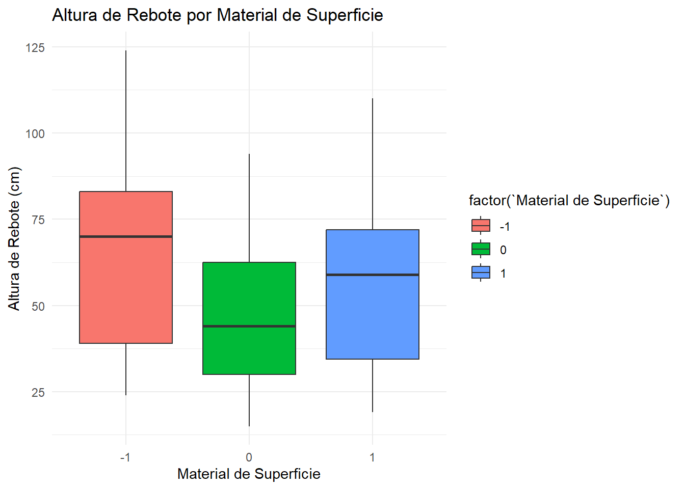
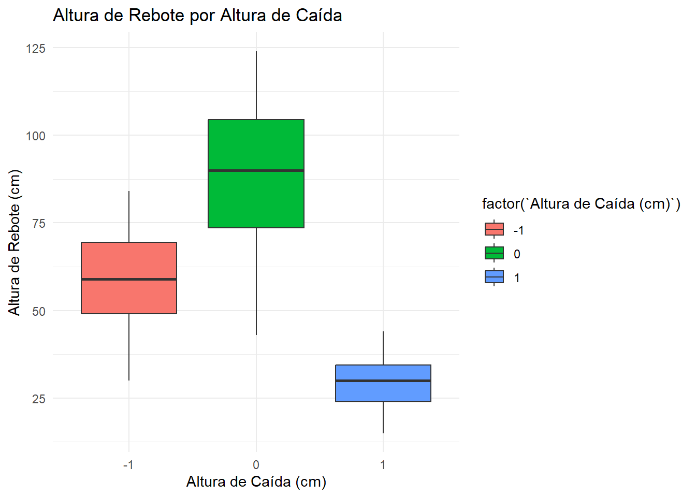
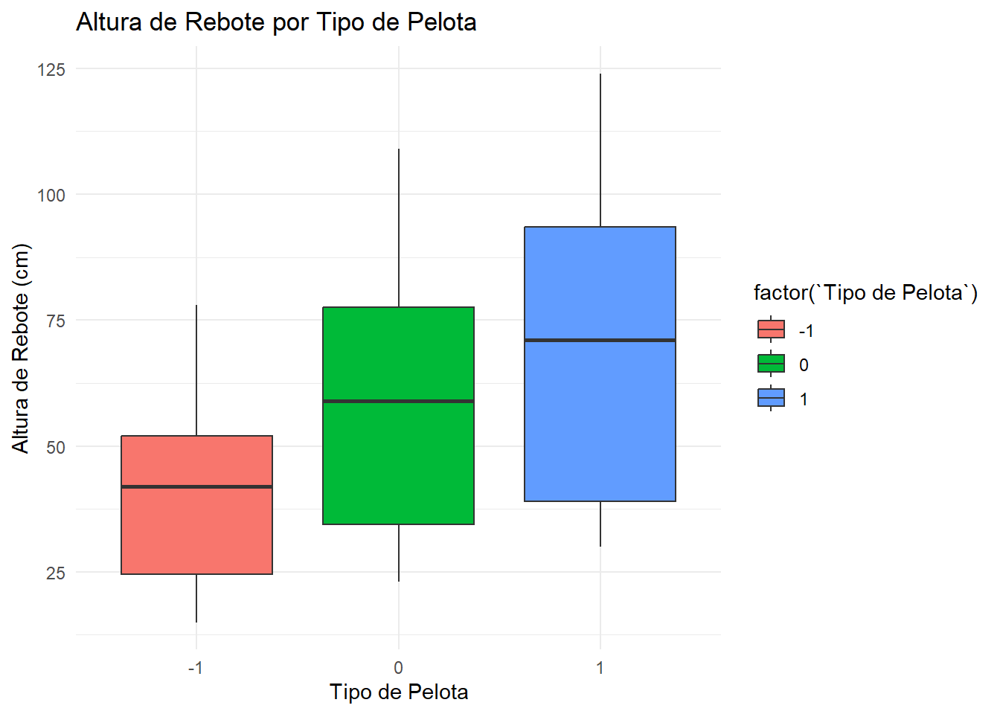
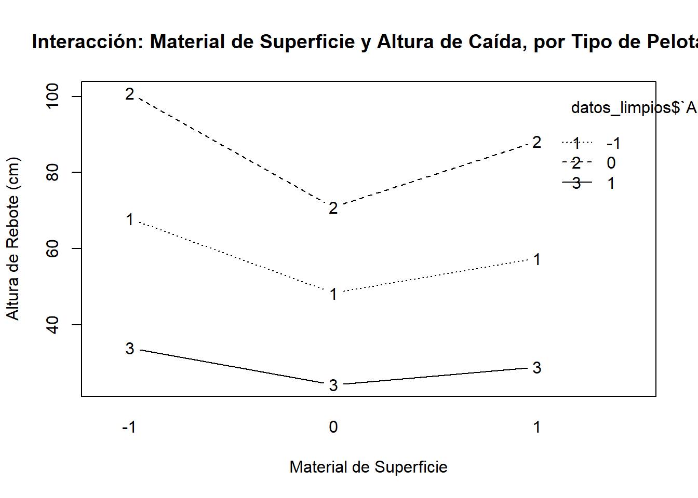
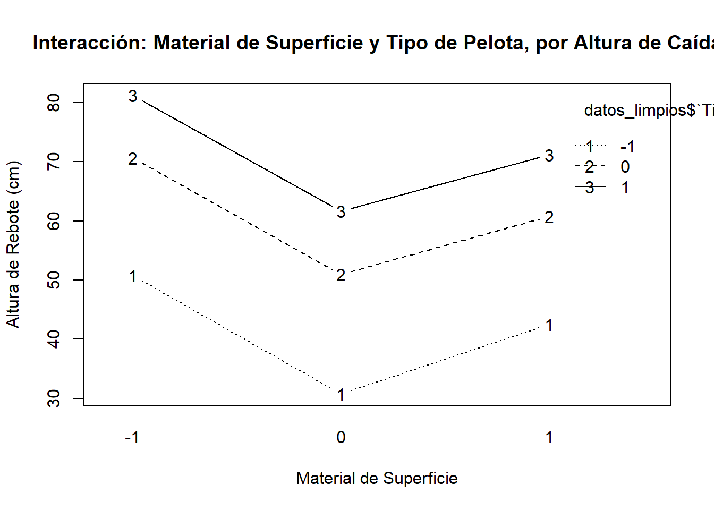
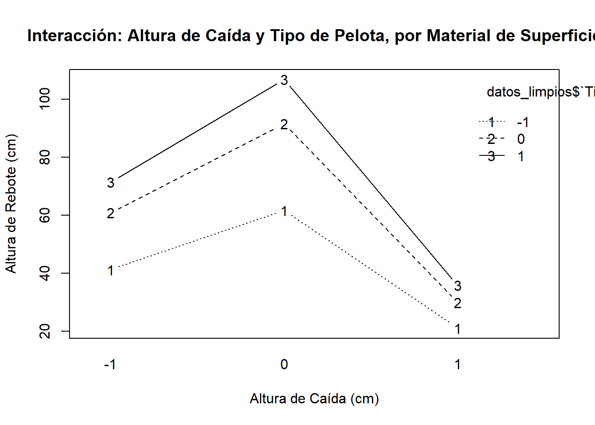
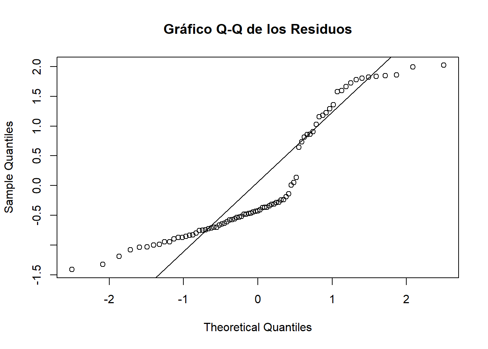
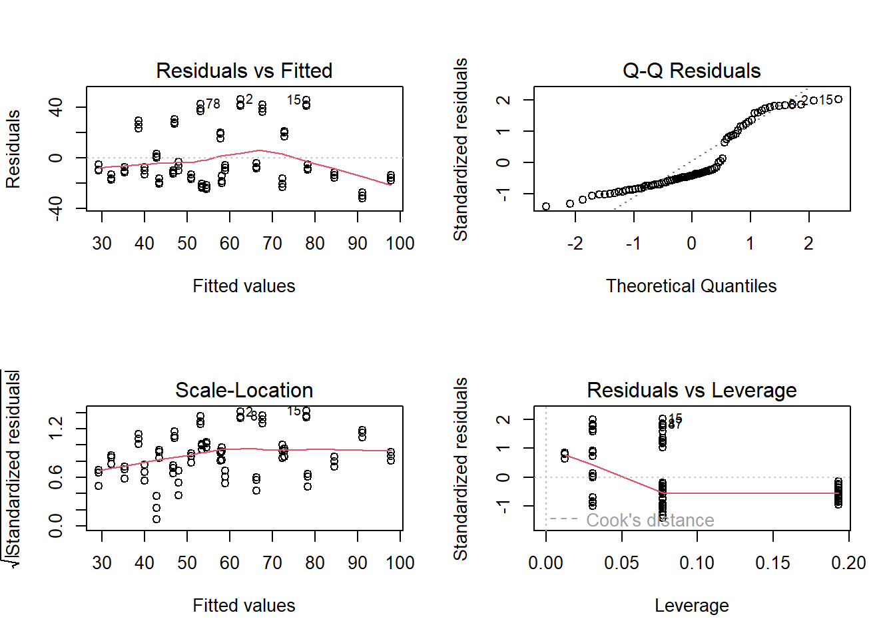

| Factor | Codificación | Descripción | Tipo |
|---|---|---|---|
| Material de Superficie | Cemento (-1), Pasto Sintético (0), Madera (1) | Tipo de superficie sobre la cual se realiza el experimento | Categórico |
| Altura de Caída | 50 cm (-1), 100 cm (0), 150 cm (1) | Altura desde la cual se deja caer la pelota | Numérico |
| Tipo de Pelota | Plástico (0), Espuma (1), Goma (-1) | Material de la pelota utilizada en el experimento | Categórico |
Optimización del Rendimiento de Pelotas Deportivas mediante Análisis Multifactorial de Rebote
#| echo: false
#| include: false
1 Introducción
En la industria de artículos deportivos, la investigación y el desarrollo son fundamentales para ofrecer productos innovadores y de alta calidad que satisfagan las necesidades de los atletas y aficionados. Este trabajo se centra en un emocionante proyecto de investigación destinado a diseñar una nueva pelota deportiva que no solo brinde un rendimiento óptimo, sino que también promueva la práctica deportiva y el desarrollo de habilidades en los usuarios.
Este experimento forma parte de los esfuerzos por innovar y crear productos que mejoren el desempeño y la experiencia de los deportistas. Al comprender cómo diferentes variables influyen en el rebote de una pelota, la empresa podrá diseñar productos más eficientes y funcionales que se destaquen en el mercado deportivo.
2 Objetivo General
Diseñar una pelota deportiva de
alto rendimiento y durabilidad mediante el estudio del efecto de diferentes variables en la altura de rebote, con el fin de mejorar el rendimiento de los atletas y promover la práctica deportiva.
2.1 Objetivos Específicos
Evaluar el impacto del material de la pelota (goma, espuma y plástico) en la altura de rebote sobre diferentes superficies, con el propósito de seleccionar el material más adecuado para cada disciplina deportiva.
Investigar la relación entre la presión interna de la pelota y su altura de rebote, con el objetivo de optimizar el inflado de la pelota para lograr un rendimiento óptimo.
Determinar la influencia del recubrimiento externo de la pelota (texturizado, liso, con relieves, etc.) en la altura de rebote sobre diferentes superficies, para mejorar el agarre y el control de la pelota durante el juego.
3 Factores y Niveles
3.1 Variable Respuesta
Altura de Rebote: Medida en centímetros (la altura máxima que alcanza la pelota después de rebotar).
3.2 Variables Fijas
Utilizar la misma técnica de lanzamiento para dejar caer la pelota (con un ángulo y fuerza constantes).
Realizar el experimento en el mismo lugar con condiciones ambientales controladas.
Usar una regla o dispositivo de medición preciso para medir la altura de rebote.
Utilizar pelotas del mismo tamaño.
3.3 Variables Controlables
Tipo de Superficie: Madera, Cemento, Pasto Sintético.
Altura de Caída: 50 cm, 100 cm, 150 cm.
Material de Pelota: Goma, Espuma, Plástico.
3.4 Variables No Controlables
Variaciones menores en la técnica de lanzamiento.
Imperfecciones en la superficie de rebote.
Condiciones ambientales externas.
4 Diseño Experimental
Tipo de Diseño: Factorial 3×3×3.
Tratamientos: 27 tratamientos (3 niveles de tipo de superficie, 3 niveles de altura de caída, 3 niveles de tipo de pelota).
Réplicas: Realizar 3 réplicas por tratamiento.
Total de Observaciones: 3×3×3×3 = 81 observaciones.
5 Realización del Experimento
Seleccionar las tres superficies (Madera, Cemento, Pasto Sintético) y prepararlas para el experimento.
Elegir las alturas de caída de la pelota (50 cm, 100 cm, 150 cm) y establecer la altura de cada plataforma de lanzamiento.
Seleccionar las tres pelotas (Pelota de tenis, Pelota de ping-pong, Pelota de goma) y asegurarse de que estén en buenas condiciones para el experimento.
Realizar todas las combinaciones posibles de los factores: dejar caer cada tipo de pelota desde cada altura de caída en cada tipo de superficie.
Para cada combinación de factores, repetir el experimento dos veces para obtener datos replicados.
Registrar la altura de rebote de cada pelota después de cada lanzamiento.
5.1 Tabla Resumen de Factores
5.2 Exploración gráfica mediante diagramas de caja (boxplots)
Muestran la distribución de datos, sus cuartiles y posibles valores atípicos, facilitando la comparación entre diferentes grupos o categorías



En general, la altura de rebote varía significativamente según el material de superficie y la altura de caída evaluados. Las superficies de madera y cemento muestran consistentemente alturas de rebote superiores en comparación con el pasto sintético. Es notable que la altura de rebote es más prominente con una altura de caída de 50 cm, particularmente en superficies de madera. Además, se observa un patrón consistente en todas las superficies evaluadas, donde las alturas de rebote decrecen de 50 cm a 150 cm y luego a 100 cm. Estos hallazgos sugieren que la combinación específica de material de superficie y altura de caída influye significativamente en la altura de rebote medida, proporcionando insights importantes para el diseño y la selección de superficies en contextos donde la rebote es crucial.
5.3 Graficos de interacción
Los gráficos de interacción nos permiten visualizar cómo las variables predictoras (Material de Superficie, Altura de Caída, Tipo de Pelota) afectan la variable de respuesta (Altura de Rebote)



6 Modelo de efecto
\[ Y_{ijkl} = \mu + \alpha_{i} + \beta_{j} + \gamma_{k} +(\alpha\beta)_{ij}+(\alpha\gamma)_{ik} +(\beta\gamma)_{jk} +(\alpha\beta\gamma)_{ijk} + \varepsilon_{ijkl} \] \[ i =1,2,3 \] \[ j = 1,2,3 \] \[ k = 1,2,3 \] \[ l = 1,2,3 \] \[ j = 1,2,3 \] \[ k = 1,2,3 \] \[ l = 1,2,3 \]
7 Modelo de Regresión
\[ Y_{i} = \beta_{0}+\beta_{1} (MAterialdelasuperficie_{i})+\beta_{2} (alturadecaida_{i})+\beta_{3} (tipodepelota_{i})+\beta_{4}(materialdelasuperfie_{i}*alturadecaida_{i})+\beta_{5}(materialdesuperficie_{i}*tipodepelota_{i})+\beta_{6}(alturadecaida_{i}*tipodepelota_{i}) + \beta_{7}(materialdesuperficie{i}*alturadecaida_{i}*Ttipodepelota_{i}) \] \[ i =1,2,3,..,81 \]
8 Tabla anova
El análisis de varianza (ANOVA) es una técnica estadística utilizada para comparar las medias de tres o más grupos basándose en la variabilidad de sus observaciones. El objetivo principal del ANOVA es determinar si existen diferencias significativas entre las medias de los grupos. A continuación, se describe el procedimiento y los conceptos clave del ANOVA
[1] "Tabla de ANOVA:"| Effect | Sum.Sq | Mean.Sq | F.value | Pr..F. |
|---|---|---|---|---|
Material de Superficie |
1185.35 | 1185.35 | 2.11 | 0.150 |
Altura de Caída (cm) |
11266.67 | 11266.67 | 20.08 | 2.69e-05 |
Tipo de Pelota |
12150.00 | 12150.00 | 21.66 | 1.42e-05 |
Material de Superficie:Altura de Caída (cm) |
66.69 | 66.69 | 0.12 | 0.731 |
Material de Superficie:Tipo de Pelota |
7.11 | 7.11 | 0.01 | 0.911 |
Altura de Caída (cm):Tipo de Pelota |
529.00 | 529.00 | 0.94 | 0.335 |
Material de Superficie:Altura de Caída (cm):Tipo de Pelota |
0.67 | 0.67 | 0.00 | 0.973 |
| Residuals | 40954.73 | 561.02 | NA | NA |
Dado que el modelo es significativo según el ANOVA, existe una relación estadísticamente significativa entre las variables predictoras y la variable de respuesta en el contexto del experimento.
Altura de Caída y Tipo de Pelota: Ambas variables resultaron ser significativas en el modelo, indicando que tienen un impacto claro en la altura de rebote. Específicamente:
Altura de Caída: A medida que la altura de caída aumenta, la altura de rebote tiende a disminuir. Este comportamiento es contrario a la intuición.
Tipo de Pelota: El tipo de pelota utilizado afecta positivamente la altura de rebote. Diferentes tipos de pelotas tienen distintas propiedades físicas que influyen en la capacidad de rebote.
Material de Superficie: Esta variable no mostró un efecto significativo en la altura de rebote dentro del contexto del modelo. Esto sugiere que, considerando las otras variables controladas (altura de caída y tipo de pelota), el tipo de superficie no influye de manera significativa en la altura de rebote.
Interacciones: Las interacciones entre las variables independientes no resultaron significativas. Esto implica que las combinaciones específicas de altura de caída, tipo de pelota y material de superficie no tienen un efecto adicional o diferente sobre la altura de rebote, más allá del impacto individual de cada variable.
8.1 Evaulacion de residuos
Estos gráficos son herramientas diagnósticas esenciales para validar las suposiciones subyacentes de tu modelo de regresión lineal. Te ayudan a detectar problemas como no normalidad de los residuos, heterocedasticidad, y valores atípicos o puntos de alta influencia que podrían afectar la validez de tus resultados.


Linealidad*: Hay indicios de no linealidad en el gráfico de residuos vs valores ajustados.
Normalidad de Residuos*: Los residuos en su mayoría siguen una distribución normal, aunque hay algunos outliers.
Heterocedasticidad*: Puede haber alguna heterocedasticidad, como se sugiere en el gráfico de escala-localización.
*Puntos Influyentes: Hay varios puntos influyentes que podrían estar afectando el modelo de manera significativa.
8.2 Validacion del modelo
Shapiro-Wilk normality test
data: residuos
W = 0.85362, p-value = 1.873e-07
Kruskal-Wallis rank sum test
data: Altura de Rebote (cm) by Material de Superficie
Kruskal-Wallis chi-squared = 6.2544, df = 2, p-value = 0.04384 Kruskal-Wallis rank sum test
data: x and group
Kruskal-Wallis chi-squared = 6.2544, df = 2, p-value = 0.04
Comparison of x by group
(Bonferroni)
Col Mean-|
Row Mean | -1 0
---------+----------------------
0 | 2.499245
| 0.0187*
|
1 | 1.171521 -1.327724
| 0.3621 0.2764
alpha = 0.05
Reject Ho if p <= alpha/2$chi2
[1] 6.254363
$Z
[1] 2.499246 1.171522 -1.327724
$P
[1] 0.006222896 0.120694609 0.092134589
$P.adjusted
[1] 0.01866869 0.36208383 0.27640377
$comparisons
[1] "-1 - 0" "-1 - 1" "0 - 1" Normalidad de los Residuos:
El test de Shapiro-Wilk indica que los residuos del modelo de regresión no siguen una distribución normal (p < 0.05). Esto sugiere que el supuesto de normalidad de los residuos no se cumple, lo cual es importante para interpretar adecuadamente las pruebas estadísticas y las conclusiones derivadas del modelo de regresión. Es posible que se deban considerar métodos alternativos que no requieran la normalidad de los residuos o explorar transformaciones de los datos para mejorar la normalidad.
Prueba de Kruskal-Wallis:
La prueba indica que hay diferencias significativas en las distribuciones de las alturas de rebote entre al menos dos de los grupos de “Material de Superficie” (p = 0.04384). Esto implica que la mediana de la altura de rebote varía entre al menos dos tipos de superficies (por ejemplo, cemento y pasto sintético). Es recomendable explorar estas diferencias en detalle para entender cómo el material de la superficie afecta las alturas de rebote.
Prueba de Dunn (ajustada por Bonferroni):
Después de ajustar por múltiples comparaciones, se encontró que la diferencia en las alturas de rebote entre las superficies codificadas como -1 (cemento) y 0 (pasto sintético) es estadísticamente significativa (p = 0.0187). Sin embargo, no se encontraron diferencias significativas entre las comparaciones -1 vs 1 y 0 vs 1 después de la corrección de Bonferroni (p > 0.05). Esto sugiere que mientras la diferencia específica entre cemento y pasto sintético es significativa, otras comparaciones no lo son.
Razon para Continuar:
Refinamiento del Análisis: A pesar de la falta de normalidad en los residuos, la prueba de Kruskal-Wallis y el test de Dunn proporcionan información valiosa sobre las diferencias entre los materiales de superficie en cuanto a las alturas de rebote. Este análisis puede ser crucial para entender qué superficies son más adecuadas para ciertos usos deportivos o recreativo
9 Mejor tratamiento
Este análisis te proporciona una manera visual y cuantitativa de evaluar el mejor tratamiento (combinación de factores) para maximizar la altura de rebote de las pelotas. La combinación del ajuste del modelo, la predicción y la visualización interactiva te permite explorar de manera efectiva el espacio de los factores y tomar decisiones informadas basadas en los resultados del modelo de regresión
9.1 Replicas necesarias para tener una potencia del 90%
Para asegurar que el estudio tenga la capacidad de detectar diferencias significativas si existen, se llevará a cabo un análisis detallado para determinar el número adecuado de réplicas
Balanced one-way analysis of variance power calculation
k = 3
n = 210.1857
f = 0.142
sig.level = 0.05
power = 0.9
NOTE: n is number in each groupNúmero de réplicas necesarias para Material de Superficie: 211
Balanced one-way analysis of variance power calculation
k = 3
n = 24.9402
f = 0.42
sig.level = 0.05
power = 0.9
NOTE: n is number in each groupNúmero de réplicas necesarias para Altura de Caída: 25
Balanced one-way analysis of variance power calculation
k = 3
n = 128.3434
f = 0.182
sig.level = 0.05
power = 0.9
NOTE: n is number in each groupNúmero de réplicas necesarias para Tipo de Pelota: 129 1-Material de Superficie: Se calculó que se necesitan aproximadamente 211 réplicas por grupo para detectar un efecto de tamaño moderado (f = 0.142) con una potencia del 90% y un nivel de significancia del 5%
2-Altura de Caída: Se determinó que se requieren alrededor de 25 réplicas por grupo para detectar un efecto de tamaño moderado (f = 0.42) con una potencia del 90% y un nivel de significancia del 5%
3-Tipo de Pelota: Se estimó que se necesitan aproximadamente 129 réplicas por grupo para detectar un efecto de tamaño moderado (f = 0.182) con una potencia del 90% y un nivel de significancia del 5%
9.2 Calcular la potencia para cada factor
Calcular la potencia estadística para cada factor en un análisis de varianza (ANOVA) es crucial para evaluar si el experimento tiene suficiente sensibilidad para detectar efectos significativos. La potencia de una prueba estadística es la probabilidad de rechazar la hipótesis nula cuando ésta es falsa, es decir, la capacidad de la prueba para detectar un efecto si realmente existe.
Potencia alcanzada para cada factor:Material de Superficie: 0.05869682 Altura de Caída: 0.1316009 Tipo de Pelota: 0.06438852 Material de Superficie: La potencia alcanzada para detectar diferencias significativas entre los grupos de materiales de superficie es de aproximadamente 0.0587. Esto significa que hay una baja probabilidad de detectar un efecto real si existe un efecto de tamaño pequeño a moderado (f = 0.142).
Altura de Caída: La potencia alcanzada para detectar diferencias significativas entre los grupos de alturas de caída es de aproximadamente 0.1316. Esta potencia también es relativamente baja, indicando que hay una probabilidad moderada de detectar un efecto real si existe un tamaño de efecto de 0.42.
Tipo de Pelota: La potencia alcanzada para detectar diferencias significativas entre los tipos de pelota es de aproximadamente 0.0644. Esta potencia es similarmente baja, lo que sugiere que hay una baja probabilidad de detectar un efecto real si existe un tamaño de efecto de 0.182.
10 conclusiones
Contrariamente a las expectativas, el tipo de superficie no mostró un efecto significativo en la altura de rebote en este estudio particular. Esto sugiere que, dentro del rango estudiado y controlando otros factores, la elección del material de la superficie puede no ser crucial para controlar la altura de rebote de las pelotas.
La altura de caída mostró ser un factor crucial en la altura de rebote. A medida que aumenta la altura de caída, la altura de rebote tiende a disminuir. Este hallazgo puede ser útil para diseñar espacios deportivos o recreativos donde se desee controlar la altura del rebote de las pelotas.
El tipo de pelota demostró tener un impacto significativo en la altura y variabilidad del rebote. Por ejemplo, las pelotas de goma mostraron una altura de rebote más alta y más variable en comparación con las de plástico y espuma. Esto sugiere que la elección del tipo de pelota es crucial dependiendo de los objetivos específicos del uso (por ejemplo, deportes versus actividades recreativas).
Aunque se exploraron las interacciones entre estos factores, no se encontraron efectos significativos adicionales más allá de los efectos individuales de cada factor. Esto indica que, en el contexto de este estudio, los efectos de material de superficie, altura de caída y tipo de pelota pueden considerarse independientes en términos de influencia en la altura de rebote.